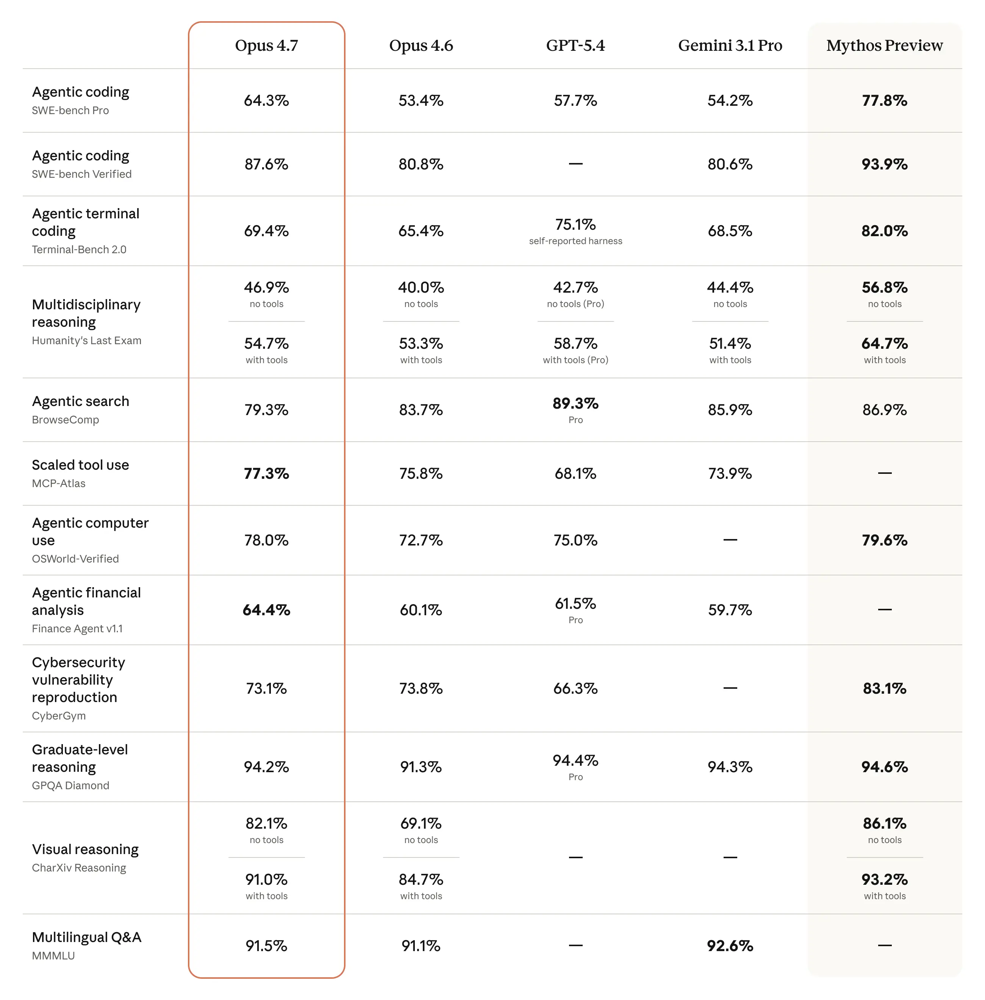
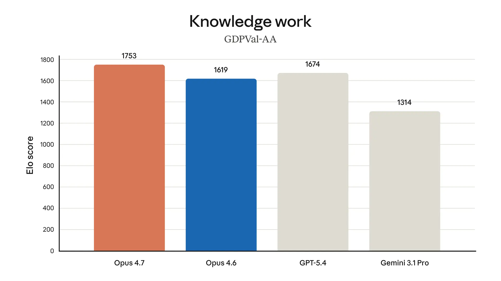
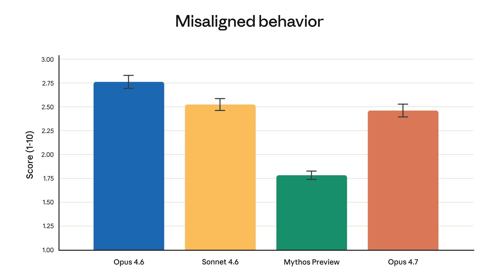
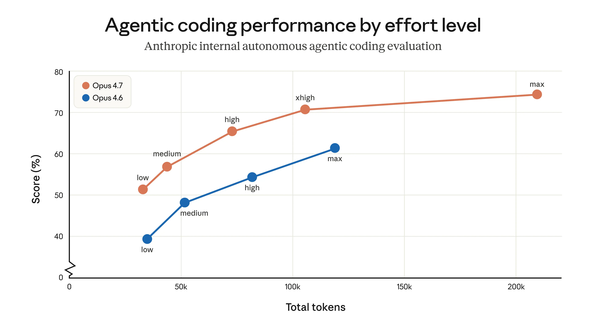

Introducing Claude Opus 4.7
Our latest model, Claude Opus 4.7, is now generally available.
Opus 4.7 is a notable improvement on Opus 4.6 in advanced software engineering, with particular gains on the most difficult tasks. Users report being able to hand off their hardest coding work—the kind that previously needed close supervision—to Opus 4.7 with confidence. Opus 4.7 handles complex, long-running tasks with rigor and consistency, pays precise attention to instructions, and devises ways to verify its own outputs before reporting back.
The model also has substantially better vision: it can see images in greater resolution. It’s more tasteful and creative when completing professional tasks, producing higher-quality interfaces, slides, and docs. And—although it is less broadly capable than our most powerful model, Claude Mythos Preview—it shows better results than Opus 4.6 across a range of benchmarks:

Last week we announced Project Glasswing, highlighting the risks—and benefits—of AI models for cybersecurity. We stated that we would keep Claude Mythos Preview’s release limited and test new cyber safeguards on less capable models first. Opus 4.7 is the first such model: its cyber capabilities are not as advanced as those of Mythos Preview (indeed, during its training we experimented with efforts to differentially reduce these capabilities). We are releasing Opus 4.7 with safeguards that automatically detect and block requests that indicate prohibited or high-risk cybersecurity uses. What we learn from the real-world deployment of these safeguards will help us work towards our eventual goal of a broad release of Mythos-class models.
Security professionals who wish to use Opus 4.7 for legitimate cybersecurity purposes (such as vulnerability research, penetration testing, and red-teaming) are invited to join our new Cyber Verification Program.
Opus 4.7 is available today across all Claude products and our API, Amazon Bedrock, Google Cloud’s Vertex AI, and Microsoft Foundry. Pricing remains the same as Opus 4.6: $5 per million input tokens and $25 per million output tokens. Developers can use claude-opus-4-7 via the Claude API.
Testing Claude Opus 4.7
Claude Opus 4.7 has garnered strong feedback from our early-access testers:
In early testing, we’re seeing the potential for a significant leap for our developers with Claude Opus 4.7. It catches its own logical faults during the planning phase and accelerates execution, far beyond previous Claude models. As a financial technology platform serving millions of consumers and businesses at significant scale, this combination of speed and precision could be game-changing: accelerating development velocity for faster delivery of the trusted financial solutions our customers rely on every day.
Anthropic has already set the standard for coding models, and Claude Opus 4.7 pushes that further in a meaningful way as the state-of-the-art model on the market. In our internal evals, it stands out not just for raw capability, but for how well it handles real-world async workflows—automations, CI/CD, and long-running tasks. It also thinks more deeply about problems and brings a more opinionated perspective, rather than simply agreeing with the user.
Claude Opus 4.7 is the strongest model Hex has evaluated. It correctly reports when data is missing instead of providing plausible-but-incorrect fallbacks, and it resists dissonant-data traps that even Opus 4.6 falls for. It’s a more intelligent, more efficient Opus 4.6: low-effort Opus 4.7 is roughly equivalent to medium-effort Opus 4.6.
On our 93-task coding benchmark, Claude Opus 4.7 lifted resolution by 13% over Opus 4.6, including four tasks neither Opus 4.6 nor Sonnet 4.6 could solve. Combined with faster median latency and strict instruction following, it’s particularly meaningful for complex, long-running coding workflows. It cuts the friction from those multi-step tasks so developers can stay in the flow and focus on building.
Based on our internal research-agent benchmark, Claude Opus 4.7 has the strongest efficiency baseline we’ve seen for multi-step work. It tied for the top overall score across our six modules at 0.715 and delivered the most consistent long-context performance of any model we tested. On General Finance—our largest module—it improved meaningfully on Opus 4.6, scoring 0.813 versus 0.767, while also showing the best disclosure and data discipline in the group. And on deductive logic, an area where Opus 4.6 struggled, Opus 4.7 is solid.
Claude Opus 4.7 extends the limit of what models can do to investigate and get tasks done. Anthropic has clearly optimized for sustained reasoning over long runs, and it shows with market-leading performance. As engineers shift from working 1:1 with agents to managing them in parallel, this is exactly the kind of frontier capability that unlocks new workflows.
We’re seeing major improvements in Claude Opus 4.7’s multimodal understanding, from reading chemical structures to interpreting complex technical diagrams. The higher resolution support is helping Solve Intelligence build best-in-class tools for life sciences patent workflows, from drafting and prosecution to infringement detection and invalidity charting.
Claude Opus 4.7 takes long-horizon autonomy to a new level in Devin. It works coherently for hours, pushes through hard problems rather than giving up, and unlocks a class of deep investigation work we couldn't reliably run before.
For Replit, Claude Opus 4.7 was an easy upgrade decision. For the work our users do every day, we observed it achieving the same quality at lower cost—more efficient and precise at tasks like analyzing logs and traces, finding bugs, and proposing fixes. Personally, I love how it pushes back during technical discussions to help me make better decisions. It really feels like a better coworker.
Claude Opus 4.7 demonstrates strong substantive accuracy on BigLaw Bench for Harvey, scoring 90.9% at high effort with better reasoning calibration on review tables and noticeably smarter handling of ambiguous document editing tasks. It correctly distinguishes assignment provisions from change-of-control provisions, a task that has historically challenged frontier models. Substance was consistently rated as a strength across our evaluations: correct, thorough, and well-cited.
Claude Opus 4.7 is a very impressive coding model, particularly for its autonomy and more creative reasoning. On CursorBench, Opus 4.7 is a meaningful jump in capabilities, clearing 70% versus Opus 4.6 at 58%.
For complex multi-step workflows, Claude Opus 4.7 is a clear step up: plus 14% over Opus 4.6 at fewer tokens and a third of the tool errors. It’s the first model to pass our implicit-need tests, and it keeps executing through tool failures that used to stop Opus cold. This is the reliability jump that makes Notion Agent feel like a true teammate.
In our evals, we saw a double-digit jump in accuracy of tool calls and planning in our core orchestrator agents. As users leverage Hebbia to plan and execute on use cases like retrieval, slide creation, or document generation, Claude Opus 4.7 shows the potential to improve agent decision-making in these workflows.
On Rakuten-SWE-Bench, Claude Opus 4.7 resolves 3x more production tasks than Opus 4.6, with double-digit gains in Code Quality and Test Quality. This is a meaningful lift and a clear upgrade for the engineering work our teams are shipping every day.
For CodeRabbit’s code review workloads, Claude Opus 4.7 is the sharpest model we’ve tested. Recall improved by over 10%, surfacing some of the most difficult-to-detect bugs in our most complex PRs, while precision remained stable despite the increased coverage. It’s a bit faster than GPT-5.4 xhigh on our harness, and we’re lining it up for our heaviest review work at launch.
For Genspark’s Super Agent, Claude Opus 4.7 nails the three production differentiators that matter most: loop resistance, consistency, and graceful error recovery. Loop resistance is the most critical. A model that loops indefinitely on 1 in 18 queries wastes compute and blocks users. Lower variance means fewer surprises in prod. And Opus 4.7 achieves the highest quality-per-tool-call ratio we’ve measured.
Claude Opus 4.7 is a meaningful step up for Warp. Opus 4.6 is one of the best models out there for developers, and this model is measurably more thorough on top of that. It passed Terminal Bench tasks that prior Claude models had failed, and worked through a tricky concurrency bug Opus 4.6 couldn't crack. For us, that’s the signal.
Claude Opus 4.7 is the best model in the world for building dashboards and data-rich interfaces. The design taste is genuinely surprising—it makes choices I’d actually ship. It’s my default daily driver now.
Claude Opus 4.7 is the most capable model we've tested at Quantium. Evaluated against leading AI models through our proprietary benchmarking solution, the biggest gains showed up where they matter most: reasoning depth, structured problem-framing, and complex technical work. Fewer corrections, faster iterations, and stronger outputs to solve the hardest problems our clients bring us.
Claude Opus 4.7 feels like a real step up in intelligence. Code quality is noticeably improved, it’s cutting out the meaningless wrapper functions and fallback scaffolding that used to pile up, and fixes its own code as it goes. It’s the cleanest jump we’ve seen since the move from Sonnet 3.7 to the Claude 4 series.
For the computer-use work that sits at the heart of XBOW’s autonomous penetration testing, the new Claude Opus 4.7 is a step change: 98.5% on our visual-acuity benchmark versus 54.5% for Opus 4.6. Our single biggest Opus pain point effectively disappeared, and that unlocks its use for a whole class of work where we couldn’t use it before.
Claude Opus 4.7 is a solid upgrade with no regressions for Vercel. It’s phenomenal on one-shot coding tasks, more correct and complete than Opus 4.6, and noticeably more honest about its own limits. It even does proofs on systems code before starting work, which is new behavior we haven’t seen from earlier Claude models.
Claude Opus 4.7 is very strong and outperforms Opus 4.6 with a 10% to 15% lift in task success for Factory Droids, with fewer tool errors and more reliable follow-through on validation steps. It carries work all the way through instead of stopping halfway, which is exactly what enterprise engineering teams need.
Claude Opus 4.7 autonomously built a complete Rust text-to-speech engine from scratch—neural model, SIMD kernels, browser demo—then fed its own output through a speech recognizer to verify it matched the Python reference. Months of senior engineering, delivered autonomously. The step up from Opus 4.6 is clear, and the codebase is public.
Claude Opus 4.7 passed three TBench tasks that prior Claude models couldn’t, and it’s landing fixes our previous best model missed, including a race condition. It demonstrates strong precision in identifying real issues, and surfaces important findings that other models either gave up on or didn’t resolve. In Qodo’s real-world code review benchmark, we observed top-tier precision.
On Databricks’ OfficeQA Pro, Claude Opus 4.7 shows meaningfully stronger document reasoning, with 21% fewer errors than Opus 4.6 when working with source information. Across our agentic reasoning over data benchmarks, it is the best-performing Claude model for enterprise document analysis.
For Ramp, Claude Opus 4.7 stands out in agent-team workflows. We’re seeing stronger role fidelity, instruction-following, coordination, and complex reasoning, especially on engineering tasks that span tools, codebases, and debugging context. Compared with Opus 4.6, it needs much less step-by-step guidance, helping us scale the internal agent workflows our engineering teams run.
Claude Opus 4.7 is measurably better than Opus 4.6 for Bolt’s longer-running app-building work, up to 10% better in the best cases, without the regressions we’ve come to expect from very agentic models. It pushes the ceiling on what our users can ship in a single session.
Below are some highlights and notes from our early testing of Opus 4.7:
- Instruction following. Opus 4.7 is substantially better at following instructions. Interestingly, this means that prompts written for earlier models can sometimes now produce unexpected results: where previous models interpreted instructions loosely or skipped parts entirely, Opus 4.7 takes the instructions literally. Users should re-tune their prompts and harnesses accordingly.
- Improved multimodal support. Opus 4.7 has better vision for high-resolution images: it can accept images up to 2,576 pixels on the long edge (~3.75 megapixels), more than three times as many as prior Claude models. This opens up a wealth of multimodal uses that depend on fine visual detail: computer-use agents reading dense screenshots, data extractions from complex diagrams, and work that needs pixel-perfect references.1
- Real-world work. As well as its state-of-the-art score on the Finance Agent evaluation (see table above), our internal testing showed Opus 4.7 to be a more effective finance analyst than Opus 4.6, producing rigorous analyses and models, more professional presentations, and tighter integration across tasks. Opus 4.7 is also state-of-the-art on GDPval-AA, a third-party evaluation of economically valuable knowledge work across finance, legal, and other domains.
- Memory. Opus 4.7 is better at using file system-based memory. It remembers important notes across long, multi-session work, and uses them to move on to new tasks that, as a result, need less up-front context.
The charts below display more evaluation results from our pre-release testing, across a range of different domains:

Safety and alignment
Overall, Opus 4.7 shows a similar safety profile to Opus 4.6: our evaluations show low rates of concerning behavior such as deception, sycophancy, and cooperation with misuse. On some measures, such as honesty and resistance to malicious “prompt injection” attacks, Opus 4.7 is an improvement on Opus 4.6; in others (such as its tendency to give overly detailed harm-reduction advice on controlled substances), Opus 4.7 is modestly weaker. Our alignment assessment concluded that the model is “largely well-aligned and trustworthy, though not fully ideal in its behavior”. Note that Mythos Preview remains the best-aligned model we’ve trained according to our evaluations. Our safety evaluations are discussed in full in the Claude Opus 4.7 System Card.

Also launching today
In addition to Claude Opus 4.7 itself, we’re launching the following updates:
- More effort control: Opus 4.7 introduces a new
xhigh(“extra high”) effort level betweenhighandmax, giving users finer control over the tradeoff between reasoning and latency on hard problems. In Claude Code, we’ve raised the default effort level toxhighfor all plans. When testing Opus 4.7 for coding and agentic use cases, we recommend starting withhighorxhigheffort. - On the Claude Platform (API): as well as support for higher-resolution images, we’re also launching task budgets in public beta, giving developers a way to guide Claude’s token spend so it can prioritize work across longer runs.
- In Claude Code: The new
/ultrareviewslash command produces a dedicated review session that reads through changes and flags bugs and design issues that a careful reviewer would catch. We’re giving Pro and Max Claude Code users three free ultrareviews to try it out. In addition, we’ve extended auto mode to Max users. Auto mode is a new permissions option where Claude makes decisions on your behalf, meaning that you can run longer tasks with fewer interruptions—and with less risk than if you had chosen to skip all permissions.
Migrating from Opus 4.6 to Opus 4.7
Opus 4.7 is a direct upgrade to Opus 4.6, but two changes are worth planning for because they affect token usage. First, Opus 4.7 uses an updated tokenizer that improves how the model processes text. The tradeoff is that the same input can map to more tokens—roughly 1.0–1.35× depending on the content type. Second, Opus 4.7 thinks more at higher effort levels, particularly on later turns in agentic settings. This improves its reliability on hard problems, but it does mean it produces more output tokens.
Users can control token usage in various ways: by using the effort parameter, adjusting their task budgets, or prompting the model to be more concise. In our own testing, the net effect is favorable—token usage across all effort levels is improved on an internal coding evaluation, as shown below—but we recommend measuring the difference on real traffic. We’ve written a migration guide that provides further advice on upgrading from Opus 4.6 to Opus 4.7.

Footnotes
1 This is a model-level change rather than an API parameter, so images users send to Claude will simply be processed at higher fidelity. Because higher-resolution images consume more tokens, users who don’t require the extra detail can downsample images before sending them to the model.
- For GPT-5.4 and Gemini 3.1 Pro, we compared against the best reported model version available via API in the charts and table.
- MCP-Atlas: The Opus 4.6 score has been updated to reflect revised grading methodology from Scale AI.
- SWE-bench Verified, Pro, and Multilingual: Our memorization screens flag a subset of problems in these SWE-bench evals. Excluding any problems that show signs of memorization, Opus 4.7’s margin of improvement over Opus 4.6 holds.
- Terminal-Bench 2.0: We used the Terminus-2 harness with thinking disabled. All experiments used 1× guaranteed/3× ceiling resource allocation averaged over five attempts per task.
- CyberGym: Opus 4.6’s score has been updated from the originally reported 66.6 to 73.8, as we updated our harness parameters to better elicit cyber capability.
- SWE-bench Multimodal: We used an internal implementation for both Opus 4.7 and Opus 4.6. Scores are not directly comparable to public leaderboard scores.
May 4, 2026: Updated Document reasoning graph to reflect updated OfficeQA Pro scores for Opus 4.7.
Related content
Claude discovers a novel enzyme system with CRISPR-like repeats
We’re announcing a new life sciences research group and laboratory at Anthropic. This post introduces the team behind this work and shares early results in which Claude discovered a novel enzyme system with properties reminiscent of CRISPR, with only high-level direction from our scientists.
Read morePartnering with Accenture on embedded evaluation
Read moreIntroducing the Life Sciences Verification Program
The Life Sciences Verification Program (LSVP) gives life science professionals access to Claude Mythos, Opus, and Sonnet models with a refined set of safeguards more permissive for biology-related work.
Read more